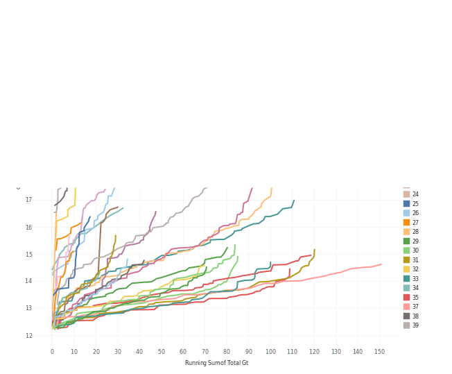

Forest products and bioenergy in California
The role for UC research and extension
Peter W. Tittmann, Ph.D.
Created: 2017-03-14 Tue 18:30
About me

Senior Analyst @ New Forests (2015–present)
- Rapid assessments of carbon offset value
- Due diligence on property acquisitions
- Growth and yield modeling
- Financial model development
Academic Coordinator @ UC Biomass Utilization Group (2013-present)
- Biomass infrastructure map
- Life-cycle analysis of roundwood harvest
PostDoc @ UC Davis Energy Institute (2011-2013)
- Bioenergy systems modeling
- Hybrid poplar growth modeling
Forest Products in California: Key issues
- Efficiency and innovation
- Renewable energy
- Carbon cycle of wood products
- Public education
Efficiency and innovation
- Infrastructure
- Products
- Supply chains
- Livelihood
Infrastructure
Utilization of biomass from tree mortality
Collaborators: Carmen Tubbesing (Ph.D. Candidate ESPM), Eng. Jose Lara (Ph.D. Candidate Energy and Resources)
Funded by: California Energy Commission
- Translate Aerial Detection Survey mortality to biomass volume @30m statewide
- Model harvest and transport costs
- Evaluate substation-level distribution capacity for small scale (<3MW) biomass power.
Mapping Mortality


Spatial Clustering


Modeling harvest operations cost
Yarding distance

Slope

Cluster-level supply curve

Biomass and forest products infrastructure database
Products
Redwood Properties: NZ vs CA
Calculate Modulus of Elasticity (MOE) and modulus of Rupture (MOR) for redwood samples from New Zealand and California

Redwood Results
Renewable Energy
- Fuels
- Biomass power
- Heating and cooling
Carbon Cycle of Wood Products
- Integrated industrial/forest ecology
- Lack of data
- Need for science based leadership
Public Education
- Raising public awareness/interest in forests as places of both recreation/wilderness and livelihood, material production
Smurfs ?!
Research questions
- What forest product utilization strategies minimize climate pollution and public health impacts?
- What strategies align with the range of public values for forests?
- What innovations in the forest product sector improve our ability to efficiently and sustainably manage forests?
- What are effective strategies for public education around sustainable forest products?
Extension Priorities
- Develop a robust applied research platform with strong collaboration between UC, CA and non-CA groups in collaboration with county Advisers
- Engage actively in public discourse relevant to forest products, climate change, and forest sustainability
- Social media
- Workshops/fora
- Policy initiatives
- Provide comment on agency initiatives
- Provide technical assistance to forest products and bioenergy sector
- Close collaboration with county advisors
- Align research with barrier issues identified through outreach
- Provide review and guidance on proposal